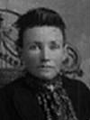

fiche familiale
******************************************************************************
| |
Augustin Bourget décède à l'âge de 96 ans. Naissance le 4 décembre 1830 Décès le 9 avril 1927 à Laverlochère, cté Témiscamingue Funérailles le 11 avril 1927 à St-Isidore de Laverlochère. Sépulture: au cimetière de Laverlochère Il demeurait chez son fils Joseph lors de son décès. Père: Joseph Bourget Mère: Marie Bourbon Mariage le 20 avril 1857 à St-Raymond, cté Portneuf 1ère épouse: Philomène Bernard-Bourassa Père: Jean-Baptiste Bernard Mère: Émilie Thivierge |
Enfant 1 Emma Bourget
Mariage le 9 nov 1891 à Scotstown, cté Compton
Conjoint: Irénée Carrol
Père: Irénée Carrol
Mère: Joséphine Villeneuve
*******************************************************************************
Mariage le 15 avril 1872 à St-Raymond, cté Portneuf
| |
2ème épouse: Rosalie Gilbert Naissance en oct 1833 Père: Hubert Gilbert Mère: Rosalie Gilbert |
Enfant 1 Joseph Bourget
Dit : Ti-Jo.
décède à l'âge de 79 ans.
Naissance le 14 mars 1867
Décès le 30 avril 1946 à Laverlochère.
Sépulture: au cimetière de Laverlochère
Parrain d'Alice Barriault.
Mariage le 23 septembre 1895 à Cookshire, cté Compton.
Conjointe: Marie Dumont
n. 8 mars 1875 d. en 1914
Mariage le 6 octobre 1923 à Notre-Dame-du-Rosaire de Ville-Marie
Conjointe: Emma Rabouin
-------------------------------------------------------------------------------
|   |
Enfant 2 Anna Bourget décède à l'âge de 37 ans. Naissance le 15 août 1875 Décès le 24 mars 1913 à Laverlochère, cté Témiscamingue Funérailles: 26 mars 1913 à St-Isidore de Laverlochère Sépulture au cimetière de Laverlochère (ses ancêtres) Mariage le 21 septembre 1891 à St-Paul de Scotstown, cté Compton Conjoint: Honoré Barriault n. 18 mai 1872 d. 2 mai 1927. (sa famille) |
Enfant 3 Raymond Bourget
Naissance: 20 mars 1878
Parrain de Dolora Barriault
Mariage: 22 jul 1902 à Kingsey Falls, cté Drummond
Conjointe: Rosanna Ouellet
-------------------------------------------------------------------------------
Enfant 4 Olivine-Alviane Bourget
Marraine d'Alphonse Barriault.
Mariage: 13 fév 1899 à St-Paul de Scotstown, cté Compton
Conjoint: Joseph Boutin
-------------------------------------------------------------------------------